Case study · 5 min read
Turning a nutrition network’s scattered grant tools into one platform people trust
Spreadsheets replaced by a portal, and a 45-to-55-hour process down to just over ten.
- Client
- Gretchen Swanson Center for Nutrition, for the USDA-backed Nutrition Incentive Hub
- My role
- Lead UX design consultant
- Timeline
- 8 months
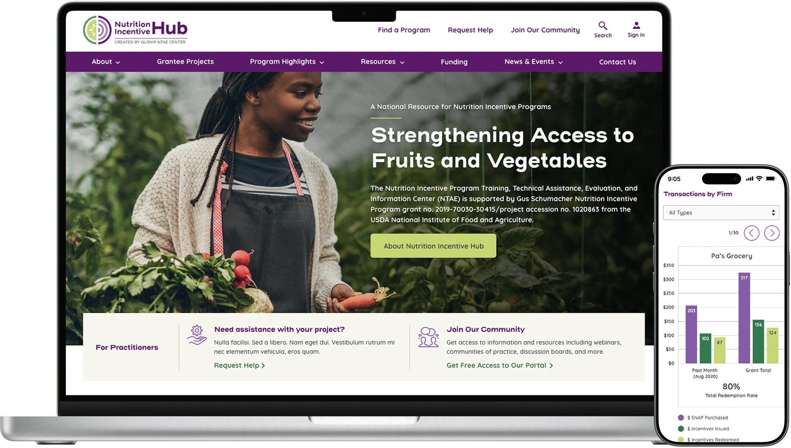
Overview
Nutrition Incentive Hub
A USDA-backed coalition supporting nutrition incentive and produce prescription projects, which put healthy food on the tables of families who need it most.
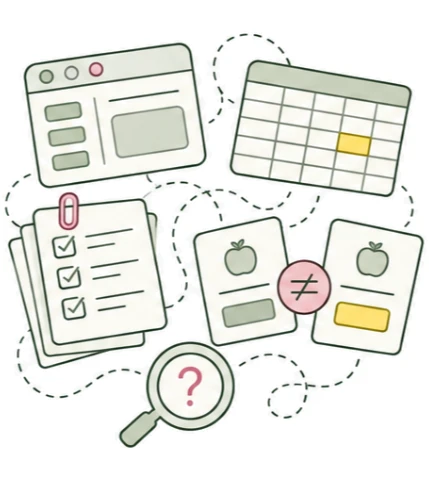
The problem
The network ran on old software, spreadsheets, and workarounds, and no two of them agreed. Grantees spent more time chasing paperwork than running programs, and administrators couldn’t tell which programs were working.

The solution
I led the design of one platform to replace all of it: a public website, a portal where grantees apply and report, and the Power BI reports administrators read. One record carries each grant from application to analysis, and grantees and administrators could finally trust what they found.
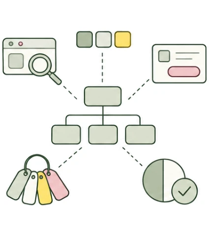
My part
I led the research, information architecture, visual design, and design system across the four roles in the map below, and checked each pattern against WCAG 2.1 AA. Developers built the website, the portal, and the Power BI reports, and the center’s staff decided what came first.
My approach
Process
Research-led product design for a federal coalition
From talking to people and mapping their days to a working portal and a documented design system. The size of each circle is the effort that step took.
![The design process in four phases, left to right from start to end. Research, in red: an onboarding analysis, user interviews, a persona workshop, and a journey mapping workshop. Information architecture, in yellow: sitemap and content strategy, and user flows. Visual design, in light blue, with testing in green: design concepts, design concept testing, low-fidelity wireframes, and high-fidelity wireframes, the two largest circles. User interface, in blue: a clickable prototype, usability testing, a digital style guide, and a component library.](../img/site/design-process-2.png)
Research
We paired a system audit with interviews and journey maps. The data showed what was slow, the interviews showed what was stressful, and they rarely pointed at the same thing.
System audit & analysis
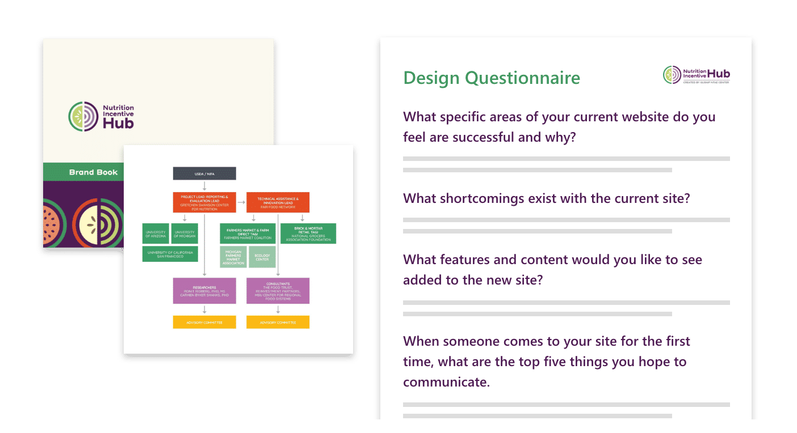
What we discovered
- Found where the spreadsheets slowed everyone down
- Matched federal reporting rules to what the system could do
- Documented every tool in use, to replace the paper trail
Stakeholder inquiry
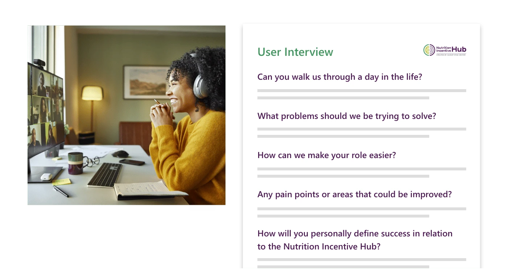
The human truth
- Interviewed users to find what wore them down
- Made the case for one live portal
- Found where people got lost while applying
Persona development

Building empathy
- Built personas around how people use the system
- Named the groups having the hardest time
- Gave developers real people to build for
Journey mapping

Mapping pain points
- Mapped the trip from applying to getting funded
- Marked the moments people got confused
- Added help where people needed it most
Information architecture
We organized the content around how people look for things, so a first-time grantee could find what they needed without knowing where it lived.
The user flows traced each handoff, form to screen: what a grantee enters in a report is what an analyst checks, so validation moved into the form, and fewer errors reached the analyst at all.
Strategic content org
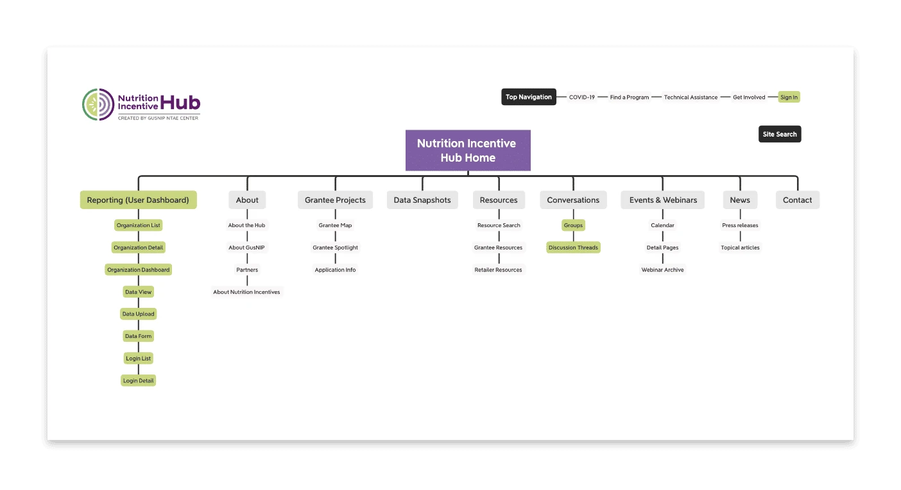
Making complexity simple
- Renamed things the way people actually say them
- Put every resource within two clicks
- Built room for the network to keep growing
Workflow optimization
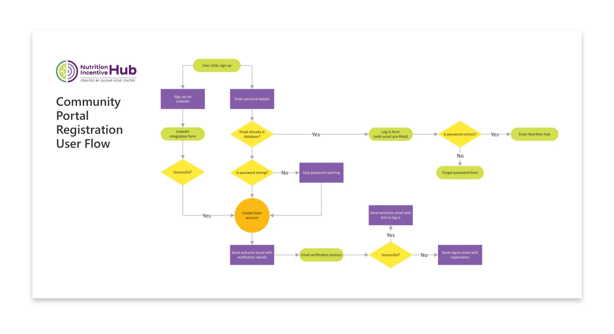
Removing friction
- Drew the user flows behind every decision path
- Traced each grantee form to the reviewer screen it feeds
Visual design
Public-sector tools often feel cold. We aimed for the authority a federal program needs and the warmth its community deserves.
Conceptual exploration
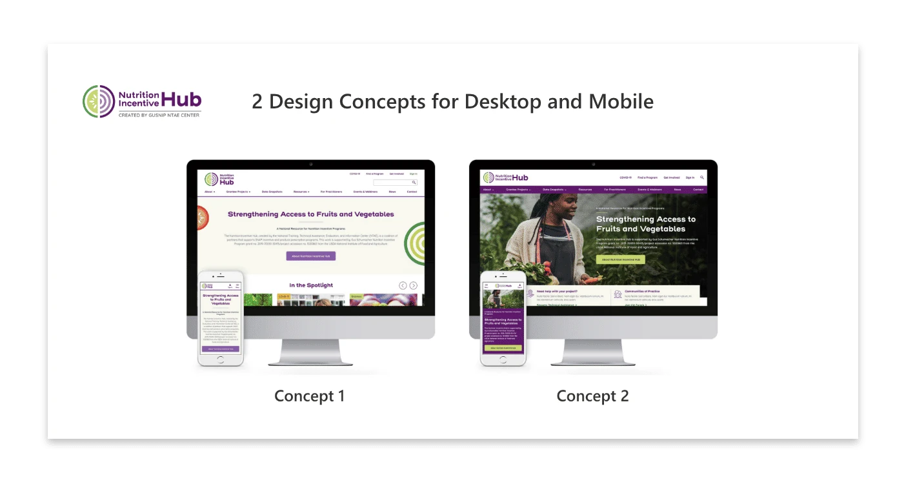
Finding the right balance
- Balanced federal authority with a human feel
- Tried directions that met the rules and still felt usable
Prototyping & validation
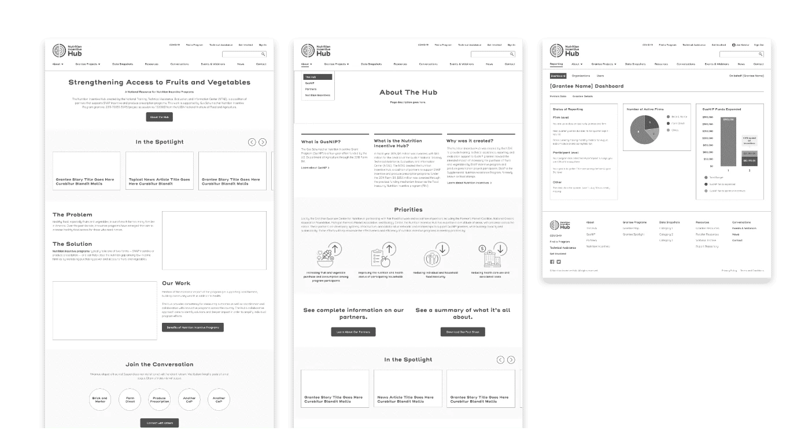
De-risking the design
- Tested assumptions on rough screens first
- Applied WCAG standards from the first draft
- Filled out the forms ourselves to find the errors
User interface
The last layer made it last: a design system and component library, every pattern checked against WCAG 2.1 AA, so the platform could grow without coming apart again.
Digital design system
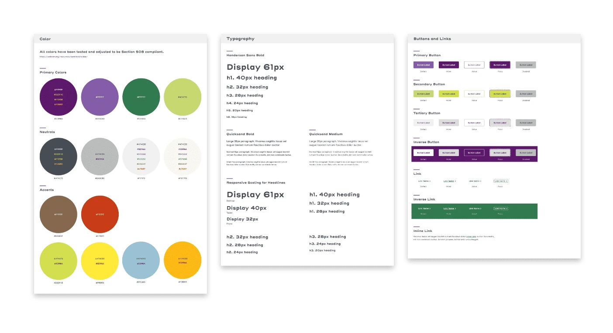
The foundation
- Built one grid that works on any device
- Built accessibility into the foundation
Component library
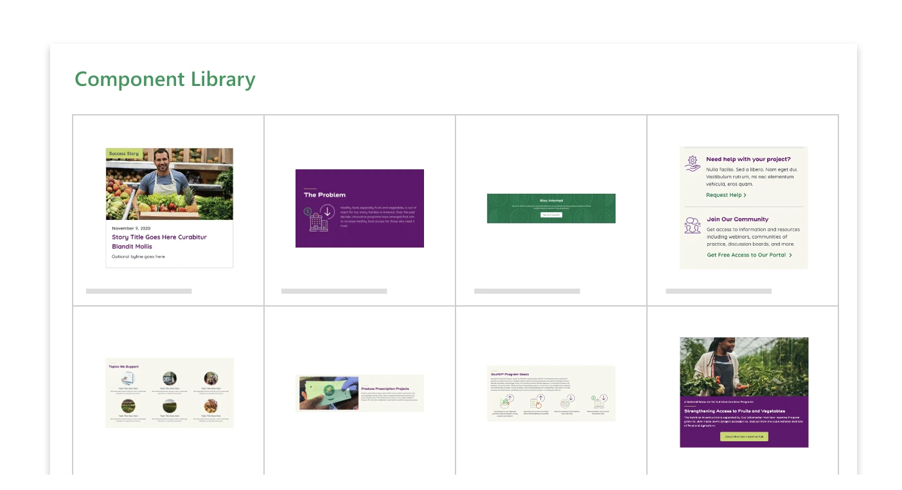
Built to last
- One place designers and developers both work from
- Small components that combine into new screens
The impact
Service map
Who touches a grant, and what changed for each
Getting fundedReporting back

Apply
- Who is in it
- Grantees, applying to run nutrition incentive and produce prescription projects.
- Before
- Old software, spreadsheets, and workarounds. People got lost partway through applying.
- After
- One portal. Resources named the way people say them, each within two clicks, and help where people got confused.

Review and fund
- Who is in it
- Reviewers at the center, deciding which applications go forward.
- Before
- What a grantee sent and what a reviewer saw lived in tools that did not agree.
- After
- What grantees submit connected to what reviewers see, with the decision paths mapped so no one hits a dead end.

Report
- Who is in it
- Grantees, every reporting period, and the analysts who check what they send.
- Before
- Submissions checked and validated by hand, after they arrived.
- After
- Validation moved into the forms. Checking time roughly halved, and the analysts saw fewer submission errors.

Analyze and decide
- Who is in it
- Analysts answering data requests, and administrators deciding which programs are working.
- Before
- 45 to 55 hours per data-analysis request. Administrators could not tell which programs were working.
- After
- Just over 10 hours per request, and nearly twice the grantees with no new analysts.
What the map shows
The work was connecting the stages
At every stage, someone waited on a system that couldn’t see what the last person did. One record now carries each grant through all four.
Stages 01 to 04
Today the platform carries 135+ grantees and 200+ grants across the U.S., with 200,000+ page requests a week and 450,000+ metrics captured a year.
How I measured this
How each figure in the map and the line above was counted, over what period, and what it cannot tell you.
- 45–55 hours to just over 10
- The analysts’ logged time per data-analysis request: the range across a sample of requests before the platform, against the average once requests ran through the Power BI reports. Measured by the program team from their own time records.
- Validation time, roughly half
- Time spent checking and validating grantee submissions per reporting period, before and after validation moved into the forms. The drop in submission errors is what the analysts observed. The error rate was not tracked the same way before, so it has no percentage.
- Grantees nearly doubled, no new analysts
- The grantee count at launch against the count after the platform had run a full reporting cycle. Analyst headcount over the same period did not change.
- 135+ grantees, 200,000+ page requests a week
- Read from the platform’s own analytics and database: counts, not estimates.